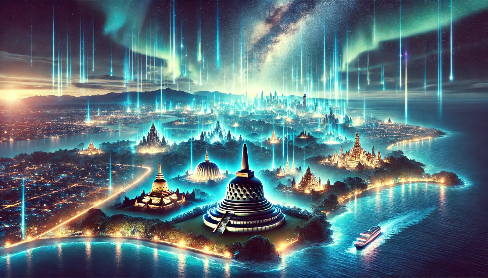

Indonesia Bercahaya – Menerangi Masa Depan Bangsa
Indonesia Menuju Masa Depan yang Lebih Terang
Indonesia adalah negeri yang kaya akan sumber daya alam dan budaya. Dengan lebih dari 17.000 pulau yang tersebar dari Sabang hingga Merauke, Indonesia memiliki potensi besar untuk menjadi negara maju yang bercahaya di berbagai bidang. Namun, pembangunan berkelanjutan dan pemerataan kesejahteraan harus menjadi prioritas agar seluruh rakyat merasakan manfaatnya.
Pengembangan infrastruktur dan energi menjadi langkah penting dalam mewujudkan Indonesia bercahaya. Pemerintah terus berupaya meningkatkan akses listrik ke pelosok negeri melalui program elektrifikasi desa dan energi terbarukan. Meski demikian, ketimpangan akses masih menjadi tantangan yang harus segera diatasi.
Pendidikan juga merupakan faktor utama dalam menerangi masa depan bangsa. Investasi dalam pendidikan, peningkatan kualitas guru, serta literasi digital yang semakin penting di era modern harus terus ditingkatkan agar generasi mendatang mampu bersaing secara global.
Kemajuan teknologi memainkan peran besar dalam menjadikan Indonesia bercahaya. Digitalisasi, inovasi, dan pengembangan startup memungkinkan pertumbuhan ekonomi yang lebih pesat. Namun, masih ada tantangan dalam infrastruktur digital dan kebutuhan peningkatan keterampilan tenaga kerja agar mampu beradaptasi dengan perubahan zaman.

Indonesia yang bercahaya juga berarti persatuan dalam keberagaman. Dengan menjunjung tinggi toleransi dan kebersamaan, bangsa ini akan tetap harmonis dan semakin bersinar di mata dunia. Polarisasi sosial dan politik harus diatasi dengan dialog yang lebih terbuka dan pemahaman antar kelompok masyarakat.
Mewujudkan Indonesia bercahaya bukan hanya tugas pemerintah, tetapi juga seluruh elemen masyarakat. Dengan bekerja sama, menjaga persatuan, serta terus berinovasi, kita dapat membawa Indonesia menuju masa depan yang lebih cerah. Saatnya berkontribusi untuk menjadikan Indonesia bercahaya, sejahtera, dan penuh harapan di tengah persaingan global.